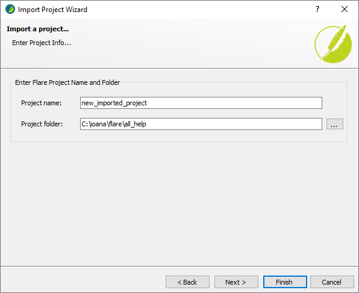
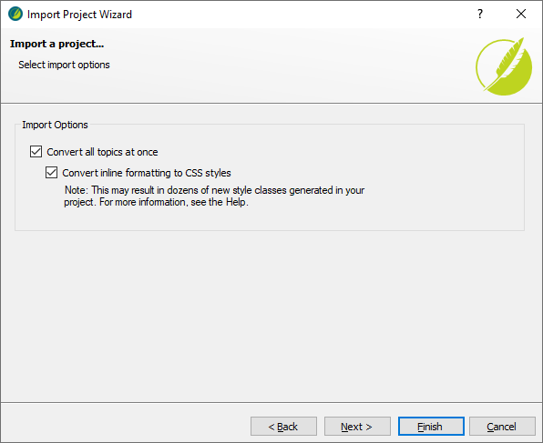
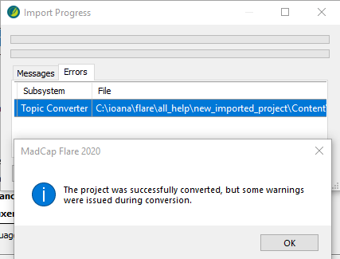
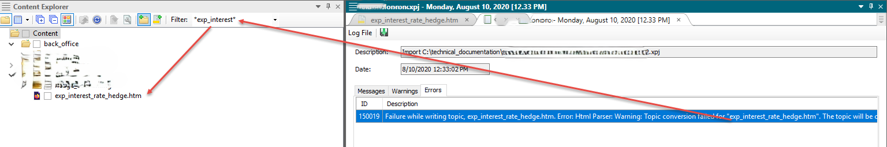
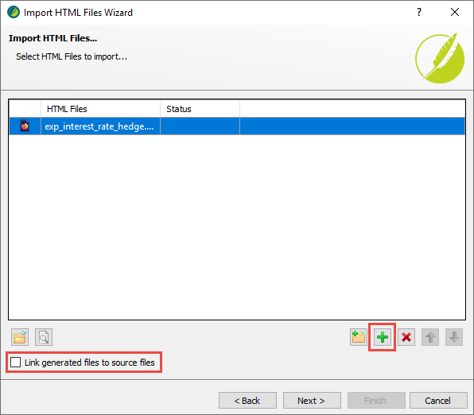
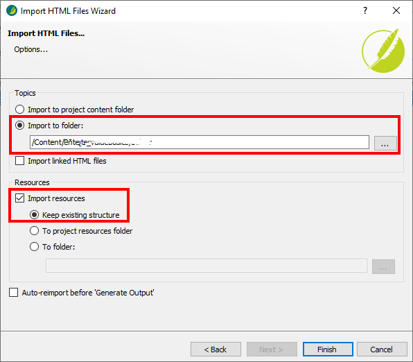
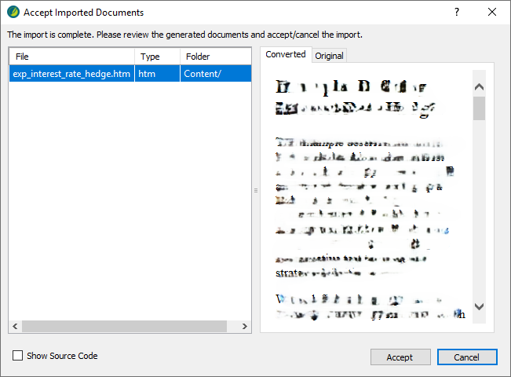
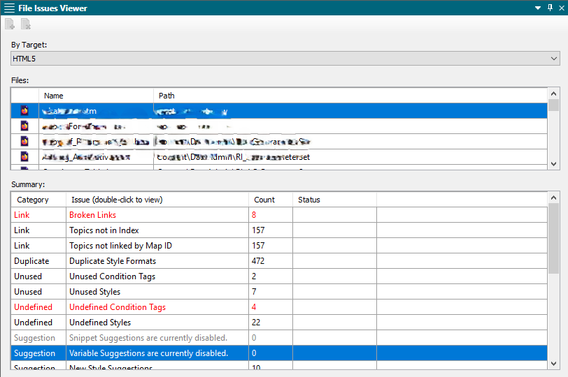
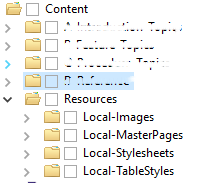
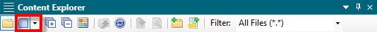

RoboHelp to Flare: Migration Steps and Troubleshooting
This describes the basic process we used for migrating our documentation from RoboHelp to Flare. Beside from the obvious migration of the content, we also wanted to have a clean slate - get rid of all the inline formatting added in RoboHelp along the years and adapt to the Flare structure.
Importing a RoboHelp project and creating a new Flare project¶
- In the File menu, select New Project > RoboHelp Project.
- In the Open File window, navigate to the RH project and select the
xpjfile. Click OK. - Click Next.
- Type the project name. This will be the name of the created folder and the name of the
flprjfile. - Make sure the project folder is correct. This should be the parent folder inside which the new project folder will be created.

- Click Next.
-
Select both Convert all topics at once and Convert inline formatting to CSS styles.

Note
The second checkbox will create new styles in your CSS based on the inline formatting that shouldn't exist in RoboHelp, but for sure does. This way, you can then analyze all the new styles that are created and either replace them with standard styles or remove them.
If you just want to import the HTML as it is in RH (inline formatting included), do not use Convert inline formatting to CSS styles.
-
(Optional) If you plan to use a spell checker for a language different from English (US), click Next and select the language.
- Click Finish. The import process starts.
- If errors occur during the import, Flare notifies you when it completes the process. It is recommended to save the log by clicking Save Log on the Import Progress window.

Analyzing import errors¶
If you saved the log when you finished the import, you can open it from Project Organizer > Reports. The Errors tab lists all topics that could not be properly imported.
- Search for the file in the Content Explorer. You can use the Filter field (don't forget to add asterisks).
- Right-click the topic and select Open With, then select a text editor such as Notepad++.
-
Go to the line indicated in the error and try to see what the problem is.

Note
Most of the problems are related to dropdowns from RoboHelp not converting to togglers in Flare. Troubleshooting is not easy, since the wrong HTML is not at all obvious, so a "divide et impera" approach works best: split the topic into 2 and try to import each half separately; once you identify the half with the problem, divide it in 2 again, and so on until you narrow the problem down enough.
-
Fix the problem in RH.
Reimporting fixed topics¶
After you have fixed the error in RH, reimport the file so that Flare can convert it to its format.
-
From the Content Explorer, delete the topic that you want to replace. In the Link Update window that is displayed, select Do Not Remove Links.
Warning
Keep in mind that if you do choose to remove the links, Flare only removes the
<a href>part. This means thatClick <a href="parameters.htm">Parameter Descriptions</a> for more informationbecomesClick Parameter Descriptions for more information, with no link... which is obviously unhelpful (and won't show up in any reports, so it will be impossible to find and fix)....And anyway, you want to keep the links, because you are only deleting the topic temporarily. Once you reimport it, the links will start working again.
-
On the Project ribbon tab, select Import > HTML File Set.
- Use the default option, Import into this Project, and click Next.
- Click the green + icon, navigate to the RH source project and select the file to be reimported.
- Clear the Link generated files to source files check box and click Next.

- Select the Import to folder option and add the path to the folder where the topic was initially imported.
- Select the Import resources option (Keep existing structure should be selected by default; if not, select that also).

- Click Finish.
- Flare displays a report of the imported files, including any resources, such as images. If they look OK, click Accept. The CSS is not applied, so the file will look a bit weird, but that's not a problem.

- Flare turns every newly imported file into a new TOC. In the Project Organizer, check the TOC folder and delete any extraneous TOCs (only keep the original one from RoboHelp).
- Flare also creates some import files. In the Project Organizer, check the Imports folder and delete the entries.
Checking the import¶
Some issues may appear after the import. You can use the File Issues report to find them:
- On the Analysis ribbon tab, click File Issues.
- Set By Target = HTML5. Note that in a larger module, this will freeze Flare for a while. Just wait a bit and the report will load.

-
Review the broken links, in particular:
a. Double-click the Broken Links line. The Broken Links report opens.
b. Right-click a link and select Fix Broken Links.
c. Click the button in the upper left corner to let Flare search for matching files. In most cases it find find the correct file and you can just click Apply.
Updating the project structure¶
When you import a project from RH, it maintains the structure it had in RH. It's best practice to then manually adapt that to the folder structure that Flare creates by default. Go into the Content Explorer, create the folders as described in the documentation standards and move each type of resource into its dedicated folder. If you are prompted to update links, do it.

Note
When you update the project structure, the ability to simultaneously move several files from one folder to another can be very helpful. To do that, on the Content Explorer toolbar, click the second button from the left, namely Toggle Show Files (not the arrow next to it!). This splits the Content Explorer in two vertical panes, allowing you to select multiple files on the right and move them to a target folder on the left. The Link Update window includes all applicable files, which means that you only need to click Update Links once for all the files you are trying to move.
